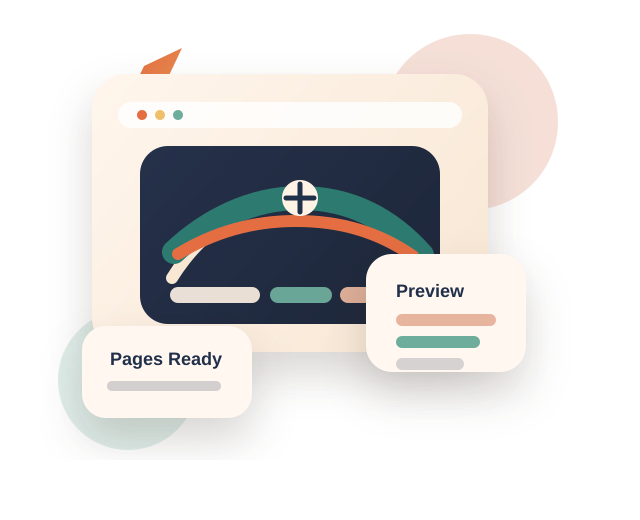

Пример сайта без сборки
Небольшой многостраничный сайт для демо, GitHub и локального сервера.
Этот шаблон показывает нормальную структуру проекта: несколько страниц, единый стиль, адаптивный интерфейс и простую функцию с SQLite для заявок.

deploy-ready
Static Site
- Чистый HTML, CSS и JS
- 3 дополнительные страницы
- SQLite при запуске через Node
О проекте
Сайт выглядит как маленький реальный продукт, а не просто как пустая заглушка.
Главная страница
Знакомит с проектом, показывает архитектуру и дает быстрые переходы по ключевым разделам.
Услуги и проекты
Отдельные страницы полезны и для навигации, и для будущего SEO, и просто как пример нормальной структуры.
Контакты с БД
Форма пишет данные в SQLite через локальный Node-сервер. Это уже не только верстка, а рабочий сценарий.
Разделы
Что уже есть в этом демо
Главная
Hero-блок, секции с преимуществами, статистика и ссылки на остальные страницы.
Открыть страницуУслуги
Карточки с пакетами и объяснение рабочего процесса в более предметном формате.
Открыть страницуПроекты
Примеры кейсов и блок с готовыми направлениями, которые можно развивать дальше.
Открыть страницуКонтакты
Форма заявки с отправкой в локальную SQLite-базу и чтением последних записей.
Открыть страницуКак использовать
Шаблон уже готов к нормальной доработке
Меняют контент
Название, тексты, CTA, контакты и сами страницы под конкретный проект.
Расширяют функциональность
Добавляют отправку писем, авторизацию, API, админку или более серьезный backend.
Публикуют
Статику выкладывают на GitHub Pages, а backend-часть при желании разворачивают отдельно.
Backend demo
Для примера уже есть рабочая форма с сохранением заявок.
На GitHub Pages она будет работать только как статическая демонстрация интерфейса. Для записи в БД запускай сайт через `npm start`.